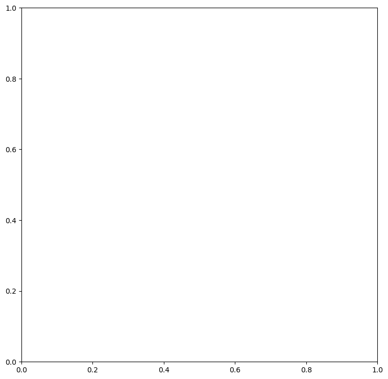
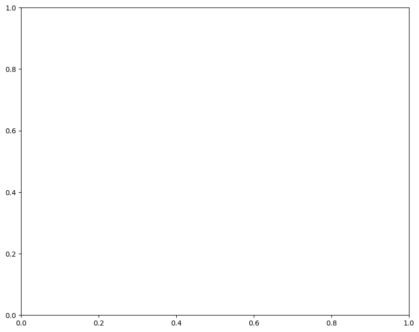

9. Grey radiation modeling with climlab#
This notebook is part of The Climate Laboratory by Brian E. J. Rose, University at Albany.
Bug fix Jan 27, 2025 – make the number of levels adjustable with variable num_lev in cell 2
9.1. 1. Introducing climlab#
climlab is a flexible engine for process-oriented climate modeling.
It is based on a very general concept of a model as a collection of individual,
interacting processes. climlab defines a base class called Process, which
can contain an arbitrarily complex tree of sub-processes (each also some
sub-class of Process). Every climate process (radiative, dynamical,
physical, turbulent, convective, chemical, etc.) can be simulated as a stand-alone
process model given appropriate input, or as a sub-process of a more complex model.
New classes of model can easily be defined and run interactively by putting together an
appropriate collection of sub-processes.
climlab is a work-in-progress, and the code base will evolve substantially over the course of this semester.
The latest code can always be found on github:
https://github.com/brian-rose/climlab
You are strongly encouraged to clone the climlab repository and use git to keep your local copy up-to-date.
Running this notebook requires that climlab is already installed on your system.
%matplotlib inline
import numpy as np
import matplotlib.pyplot as plt
import xarray as xr
from numpy import cos, deg2rad, log
import climlab
---------------------------------------------------------------------------
ModuleNotFoundError Traceback (most recent call last)
Cell In[1], line 6
4 import xarray as xr
5 from numpy import cos, deg2rad, log
----> 6 import climlab
ModuleNotFoundError: No module named 'climlab'
9.2. 2. Using climlab to implement the two-layer leaky greenhouse model#
One of the things that climlab is set up to do is the grey-radiation modeling we have already been discussing.
Since we already derived a [complete analytical solution to the two-layer leaky greenhouse model](Lecture06 – Elementary greenhouse models.ipynb), we will use this to validate the climlab code.
9.2.1. Validation#
We want to verify that the model reproduces the observed OLR given observed temperatures, and the absorptivity that we tuned in the analytical model. The target numbers are:
9.2.2. Initialize a model in climlab#
The first thing we do is create a new model.
The following example code is sparsely commented but will hopefully orient you on the basics of defining and working with a climlab Process object.
# Test in a 2-layer atmosphere - change the levels here
num_lev=2
col = climlab.GreyRadiationModel(num_lev=num_lev)
print( col)
---------------------------------------------------------------------------
NameError Traceback (most recent call last)
Cell In[2], line 3
1 # Test in a 2-layer atmosphere - change the levels here
2 num_lev=2
----> 3 col = climlab.GreyRadiationModel(num_lev=num_lev)
4 print( col)
NameError: name 'climlab' is not defined
col.subprocess
---------------------------------------------------------------------------
NameError Traceback (most recent call last)
Cell In[3], line 1
----> 1 col.subprocess
NameError: name 'col' is not defined
Every item in the above dictionary is itself an instance of the climlab.Process object:
print( col.subprocess['LW'])
---------------------------------------------------------------------------
NameError Traceback (most recent call last)
Cell In[4], line 1
----> 1 print( col.subprocess['LW'])
NameError: name 'col' is not defined
The state dictionary holds the state variables of the model. In this case, temperatures:
climlab.to_xarray(col.state)
---------------------------------------------------------------------------
NameError Traceback (most recent call last)
Cell In[5], line 1
----> 1 climlab.to_xarray(col.state)
NameError: name 'climlab' is not defined
Access these either through dictionary methods or as attributes of the model object:
print( col.state['Ts'])
print( col.Ts)
col.Ts is col.state['Ts']
---------------------------------------------------------------------------
NameError Traceback (most recent call last)
Cell In[6], line 1
----> 1 print( col.state['Ts'])
2 print( col.Ts)
3 col.Ts is col.state['Ts']
NameError: name 'col' is not defined
Now we are assigning the “observed” temperatures to our model state:
col.Ts[:] = 288.
col.Tatm[:] = np.linspace(230., 275.,num_lev)
climlab.to_xarray(col.state)
---------------------------------------------------------------------------
NameError Traceback (most recent call last)
Cell In[7], line 1
----> 1 col.Ts[:] = 288.
2 col.Tatm[:] = np.linspace(230., 275.,num_lev)
3 climlab.to_xarray(col.state)
NameError: name 'col' is not defined
LW = col.subprocess['LW']
print(LW)
---------------------------------------------------------------------------
NameError Traceback (most recent call last)
Cell In[8], line 1
----> 1 LW = col.subprocess['LW']
2 print(LW)
NameError: name 'col' is not defined
LW.absorptivity
---------------------------------------------------------------------------
NameError Traceback (most recent call last)
Cell In[9], line 1
----> 1 LW.absorptivity
NameError: name 'LW' is not defined
# copying the tuned value of epsilon from Lecture 6 notes
LW.absorptivity = 0.586
LW.absorptivity
---------------------------------------------------------------------------
NameError Traceback (most recent call last)
Cell In[10], line 2
1 # copying the tuned value of epsilon from Lecture 6 notes
----> 2 LW.absorptivity = 0.586
3 LW.absorptivity
NameError: name 'LW' is not defined
# This does all the calculations that would be performed at each time step,
# but doesn't actually update the temperatures
col.compute_diagnostics()
# Print out the dictionary
col.diagnostics
---------------------------------------------------------------------------
NameError Traceback (most recent call last)
Cell In[11], line 3
1 # This does all the calculations that would be performed at each time step,
2 # but doesn't actually update the temperatures
----> 3 col.compute_diagnostics()
4 # Print out the dictionary
5 col.diagnostics
NameError: name 'col' is not defined
# Check OLR against our analytical solution
col.OLR
---------------------------------------------------------------------------
NameError Traceback (most recent call last)
Cell In[12], line 2
1 # Check OLR against our analytical solution
----> 2 col.OLR
NameError: name 'col' is not defined
# Like the state variables, the diagnostics can also be accessed in two different ways
col.diagnostics['OLR']
---------------------------------------------------------------------------
NameError Traceback (most recent call last)
Cell In[13], line 2
1 # Like the state variables, the diagnostics can also be accessed in two different ways
----> 2 col.diagnostics['OLR']
NameError: name 'col' is not defined
col.state
---------------------------------------------------------------------------
NameError Traceback (most recent call last)
Cell In[14], line 1
----> 1 col.state
NameError: name 'col' is not defined
# perform a single time step
col.step_forward()
---------------------------------------------------------------------------
NameError Traceback (most recent call last)
Cell In[15], line 2
1 # perform a single time step
----> 2 col.step_forward()
NameError: name 'col' is not defined
col.state
---------------------------------------------------------------------------
NameError Traceback (most recent call last)
Cell In[16], line 1
----> 1 col.state
NameError: name 'col' is not defined
We just stepped forward one discreet unit in time. Because we didn’t specify a timestep when we created the model, it is set to a default value:
col.timestep
---------------------------------------------------------------------------
NameError Traceback (most recent call last)
Cell In[17], line 1
----> 1 col.timestep
NameError: name 'col' is not defined
which is 1 day (expressed in seconds).
Now we will integrate the model out to equilibrium.
We could easily write a loop to call the step_forward() method many times.
Or use a handy shortcut that allows us to specify the integration length in physical time units:
# integrate out to radiative equilibrium
col.integrate_years(2.)
---------------------------------------------------------------------------
NameError Traceback (most recent call last)
Cell In[18], line 2
1 # integrate out to radiative equilibrium
----> 2 col.integrate_years(2.)
NameError: name 'col' is not defined
# Check for equilibrium
col.ASR - col.OLR
---------------------------------------------------------------------------
NameError Traceback (most recent call last)
Cell In[19], line 2
1 # Check for equilibrium
----> 2 col.ASR - col.OLR
NameError: name 'col' is not defined
# The temperatures at radiative equilibrium
col.state
---------------------------------------------------------------------------
NameError Traceback (most recent call last)
Cell In[20], line 2
1 # The temperatures at radiative equilibrium
----> 2 col.state
NameError: name 'col' is not defined
Compare these to the analytical solutions for radiative equilibrium with \(\epsilon = 0.58\):
So it looks like climlab agrees with our analytical results to within 0.1 K. That’s good.
9.3. 3. The observed annual, global mean temperature profile#
We want to model the OLR in a column whose temperatures match observations. As we’ve done before, we’ll calculate the global, annual mean air temperature from the NCEP Reanalysis data.
## The NOAA ESRL server is shutdown! January 2019
## This will try to read the data over the internet.
ncep_filename = 'air.mon.1981-2010.ltm.nc'
## to read over internet
ncep_url = "http://www.esrl.noaa.gov/psd/thredds/dodsC/Datasets/ncep.reanalysis.derived/pressure/"
path = ncep_url
## Open handle to data
ncep_air = xr.open_dataset( path + ncep_filename, decode_times=False )
#url = 'http://apdrc.soest.hawaii.edu:80/dods/public_data/Reanalysis_Data/NCEP/NCEP/clima/pressure/air'
#air = xr.open_dataset(url)
# The name of the vertical axis is different than the NOAA ESRL version..
#ncep_air = air.rename({'lev': 'level'})
print( ncep_air)
<xarray.Dataset> Size: 17MB
Dimensions: (level: 17, lon: 144, time: 12, lat: 73, nbnds: 2)
Coordinates:
* level (level) float32 68B 1e+03 925.0 850.0 ... 30.0 20.0 10.0
* lon (lon) float32 576B 0.0 2.5 5.0 7.5 ... 352.5 355.0 357.5
* time (time) float64 96B -6.571e+05 -6.57e+05 ... -6.567e+05
* lat (lat) float32 292B 90.0 87.5 85.0 ... -85.0 -87.5 -90.0
Dimensions without coordinates: nbnds
Data variables:
climatology_bounds (time, nbnds) float64 192B ...
air (time, level, lat, lon) float32 9MB ...
valid_yr_count (time, level, lat, lon) float32 9MB ...
Attributes:
description: Data from NCEP initialized reanalysis (4...
platform: Model
Conventions: COARDS
not_missing_threshold_percent: minimum 3% values input to have non-missi...
history: Created 2011/07/12 by doMonthLTM\nConvert...
title: monthly ltm air from the NCEP Reanalysis
dataset_title: NCEP-NCAR Reanalysis 1
References: http://www.psl.noaa.gov/data/gridded/data...
_NCProperties: version=2,netcdf=4.6.3,hdf5=1.10.5
# Take global, annual average and convert to Kelvin
weight = cos(deg2rad(ncep_air.lat)) / cos(deg2rad(ncep_air.lat)).mean(dim='lat')
Tglobal = (ncep_air.air * weight).mean(dim=('lat','lon','time'))
print( Tglobal)
<xarray.DataArray (level: 17)> Size: 68B
array([ 15.179084 , 11.207003 , 7.8383274 , 0.21994135,
-6.4483433 , -14.888848 , -25.570469 , -39.36969 ,
-46.797905 , -53.652245 , -60.56356 , -67.006065 ,
-65.53293 , -61.48664 , -55.853584 , -51.593952 ,
-43.21999 ], dtype=float32)
Coordinates:
* level (level) float32 68B 1e+03 925.0 850.0 700.0 ... 50.0 30.0 20.0 10.0
We’re going to convert this to degrees Kelvin, using a handy list of pre-defined constants in climlab.constants
climlab.constants.tempCtoK
---------------------------------------------------------------------------
NameError Traceback (most recent call last)
Cell In[23], line 1
----> 1 climlab.constants.tempCtoK
NameError: name 'climlab' is not defined
Tglobal += climlab.constants.tempCtoK
print(Tglobal)
---------------------------------------------------------------------------
NameError Traceback (most recent call last)
Cell In[24], line 1
----> 1 Tglobal += climlab.constants.tempCtoK
2 print(Tglobal)
NameError: name 'climlab' is not defined
# A handy re-usable routine for making a plot of the temperature profiles
# We will plot temperatures with respect to log(pressure) to get a height-like coordinate
def zstar(lev):
return -np.log(lev / climlab.constants.ps)
def plot_soundings(result_list, name_list, plot_obs=True, fixed_range=True):
color_cycle=['r', 'g', 'b', 'y']
# col is either a column model object or a list of column model objects
#if isinstance(state_list, climlab.Process):
# # make a list with a single item
# collist = [collist]
fig, ax = plt.subplots(figsize=(9,9))
if plot_obs:
ax.plot(Tglobal, zstar(Tglobal.level), color='k', label='Observed')
for i, state in enumerate(result_list):
Tatm = state['Tatm']
lev = Tatm.domain.axes['lev'].points
Ts = state['Ts']
ax.plot(Tatm, zstar(lev), color=color_cycle[i], label=name_list[i])
ax.plot(Ts, 0, 'o', markersize=12, color=color_cycle[i])
#ax.invert_yaxis()
yticks = np.array([1000., 750., 500., 250., 100., 50., 20., 10., 5.])
ax.set_yticks(-np.log(yticks/1000.))
ax.set_yticklabels(yticks)
ax.set_xlabel('Temperature (K)', fontsize=14)
ax.set_ylabel('Pressure (hPa)', fontsize=14)
ax.grid()
ax.legend()
if fixed_range:
ax.set_xlim([200, 300])
ax.set_ylim(zstar(np.array([1000., 5.])))
#ax2 = ax.twinx()
return ax
plot_soundings([],[] );
---------------------------------------------------------------------------
NameError Traceback (most recent call last)
Cell In[26], line 1
----> 1 plot_soundings([],[] );
Cell In[25], line 15, in plot_soundings(result_list, name_list, plot_obs, fixed_range)
13 fig, ax = plt.subplots(figsize=(9,9))
14 if plot_obs:
---> 15 ax.plot(Tglobal, zstar(Tglobal.level), color='k', label='Observed')
16 for i, state in enumerate(result_list):
17 Tatm = state['Tatm']
Cell In[25], line 5, in zstar(lev)
4 def zstar(lev):
----> 5 return -np.log(lev / climlab.constants.ps)
NameError: name 'climlab' is not defined

9.4. 4. A 30-layer model using the observed temperatures#
# initialize a grey radiation model with 30 levels
col = climlab.GreyRadiationModel()
print(col)
---------------------------------------------------------------------------
NameError Traceback (most recent call last)
Cell In[27], line 2
1 # initialize a grey radiation model with 30 levels
----> 2 col = climlab.GreyRadiationModel()
3 print(col)
NameError: name 'climlab' is not defined
col.lev
---------------------------------------------------------------------------
NameError Traceback (most recent call last)
Cell In[28], line 1
----> 1 col.lev
NameError: name 'col' is not defined
col.lev_bounds
---------------------------------------------------------------------------
NameError Traceback (most recent call last)
Cell In[29], line 1
----> 1 col.lev_bounds
NameError: name 'col' is not defined
# interpolate to 30 evenly spaced pressure levels
lev = col.lev
Tinterp = np.interp(lev, np.flipud(Tglobal.level), np.flipud(Tglobal))
Tinterp
# Need to 'flipud' because the interpolation routine
# needs the pressure data to be in increasing order
---------------------------------------------------------------------------
NameError Traceback (most recent call last)
Cell In[30], line 2
1 # interpolate to 30 evenly spaced pressure levels
----> 2 lev = col.lev
3 Tinterp = np.interp(lev, np.flipud(Tglobal.level), np.flipud(Tglobal))
4 Tinterp
NameError: name 'col' is not defined
# Initialize model with observed temperatures
col.Ts[:] = Tglobal[0]
col.Tatm[:] = Tinterp
---------------------------------------------------------------------------
NameError Traceback (most recent call last)
Cell In[31], line 2
1 # Initialize model with observed temperatures
----> 2 col.Ts[:] = Tglobal[0]
3 col.Tatm[:] = Tinterp
NameError: name 'col' is not defined
# This should look just like the observations
result_list = [col.state]
name_list = ['Observed, interpolated']
plot_soundings(result_list, name_list);
---------------------------------------------------------------------------
NameError Traceback (most recent call last)
Cell In[32], line 2
1 # This should look just like the observations
----> 2 result_list = [col.state]
3 name_list = ['Observed, interpolated']
4 plot_soundings(result_list, name_list);
NameError: name 'col' is not defined
9.4.1. Tune absorptivity to get observed OLR#
col.compute_diagnostics()
col.OLR
---------------------------------------------------------------------------
NameError Traceback (most recent call last)
Cell In[33], line 1
----> 1 col.compute_diagnostics()
2 col.OLR
NameError: name 'col' is not defined
# Need to tune absorptivity to get OLR = 238.5
epsarray = np.linspace(0.01, 0.1, 100)
OLRarray = np.zeros_like(epsarray)
for i in range(epsarray.size):
col.subprocess['LW'].absorptivity = epsarray[i]
col.compute_diagnostics()
OLRarray[i] = col.OLR
plt.plot(epsarray, OLRarray)
plt.grid()
plt.xlabel('epsilon')
plt.ylabel('OLR')
---------------------------------------------------------------------------
NameError Traceback (most recent call last)
Cell In[35], line 2
1 for i in range(epsarray.size):
----> 2 col.subprocess['LW'].absorptivity = epsarray[i]
3 col.compute_diagnostics()
4 OLRarray[i] = col.OLR
NameError: name 'col' is not defined
The necessary value seems to lie near 0.055 or so.
We can be more precise with a numerical root-finder.
def OLRanom(eps):
col.subprocess['LW'].absorptivity = eps
col.compute_diagnostics()
return col.OLR - 238.5
# Use numerical root-finding to get the equilibria
from scipy.optimize import brentq
# brentq is a root-finding function
# Need to give it a function and two end-points
# It will look for a zero of the function between those end-points
eps = brentq(OLRanom, 0.01, 0.1)
print( eps)
---------------------------------------------------------------------------
NameError Traceback (most recent call last)
Cell In[37], line 6
2 from scipy.optimize import brentq
3 # brentq is a root-finding function
4 # Need to give it a function and two end-points
5 # It will look for a zero of the function between those end-points
----> 6 eps = brentq(OLRanom, 0.01, 0.1)
7 print( eps)
File ~/mini310/envs/a301/lib/python3.13/site-packages/scipy/optimize/_zeros_py.py:798, in brentq(f, a, b, args, xtol, rtol, maxiter, full_output, disp)
796 raise ValueError(f"rtol too small ({rtol:g} < {_rtol:g})")
797 f = _wrap_nan_raise(f)
--> 798 r = _zeros._brentq(f, a, b, xtol, rtol, maxiter, args, full_output, disp)
799 return results_c(full_output, r, "brentq")
File ~/mini310/envs/a301/lib/python3.13/site-packages/scipy/optimize/_zeros_py.py:94, in _wrap_nan_raise.<locals>.f_raise(x, *args)
93 def f_raise(x, *args):
---> 94 fx = f(x, *args)
95 f_raise._function_calls += 1
96 if np.isnan(fx):
Cell In[36], line 2, in OLRanom(eps)
1 def OLRanom(eps):
----> 2 col.subprocess['LW'].absorptivity = eps
3 col.compute_diagnostics()
4 return col.OLR - 238.5
NameError: name 'col' is not defined
col.subprocess.LW.absorptivity = eps
col.subprocess.LW.absorptivity
---------------------------------------------------------------------------
NameError Traceback (most recent call last)
Cell In[38], line 1
----> 1 col.subprocess.LW.absorptivity = eps
2 col.subprocess.LW.absorptivity
NameError: name 'eps' is not defined
col.compute_diagnostics()
col.OLR
---------------------------------------------------------------------------
NameError Traceback (most recent call last)
Cell In[39], line 1
----> 1 col.compute_diagnostics()
2 col.OLR
NameError: name 'col' is not defined
9.5. 5. Radiative forcing in the 30-layer model#
Let’s compute radiative forcing for a 2% increase in absorptivity.
# clone our model using a built-in climlab function
col2 = climlab.process_like(col)
print(col2)
---------------------------------------------------------------------------
NameError Traceback (most recent call last)
Cell In[40], line 2
1 # clone our model using a built-in climlab function
----> 2 col2 = climlab.process_like(col)
3 print(col2)
NameError: name 'climlab' is not defined
col2.subprocess['LW'].absorptivity *= 1.02
col2.subprocess['LW'].absorptivity
---------------------------------------------------------------------------
NameError Traceback (most recent call last)
Cell In[41], line 1
----> 1 col2.subprocess['LW'].absorptivity *= 1.02
2 col2.subprocess['LW'].absorptivity
NameError: name 'col2' is not defined
# Radiative forcing by definition is the change in TOA radiative flux,
# HOLDING THE TEMPERATURES FIXED.
col2.Ts - col.Ts
---------------------------------------------------------------------------
NameError Traceback (most recent call last)
Cell In[42], line 3
1 # Radiative forcing by definition is the change in TOA radiative flux,
2 # HOLDING THE TEMPERATURES FIXED.
----> 3 col2.Ts - col.Ts
NameError: name 'col2' is not defined
col2.Tatm - col.Tatm
---------------------------------------------------------------------------
NameError Traceback (most recent call last)
Cell In[43], line 1
----> 1 col2.Tatm - col.Tatm
NameError: name 'col2' is not defined
col2.compute_diagnostics()
col2.OLR
---------------------------------------------------------------------------
NameError Traceback (most recent call last)
Cell In[44], line 1
----> 1 col2.compute_diagnostics()
2 col2.OLR
NameError: name 'col2' is not defined
The OLR decreased after we added the extra absorbers, as we expect. Now we can calculate the Radiative Forcing:
RF = -(col2.OLR - col.OLR)
print( 'The radiative forcing is %.2f W/m2.' %RF)
---------------------------------------------------------------------------
NameError Traceback (most recent call last)
Cell In[45], line 1
----> 1 RF = -(col2.OLR - col.OLR)
2 print( 'The radiative forcing is %.2f W/m2.' %RF)
NameError: name 'col2' is not defined
9.6. 6. Radiative equilibrium in the 30-layer model#
re = climlab.process_like(col)
---------------------------------------------------------------------------
NameError Traceback (most recent call last)
Cell In[46], line 1
----> 1 re = climlab.process_like(col)
NameError: name 'climlab' is not defined
# To get to equilibrium, we just time-step the model forward long enough
re.integrate_years(1.)
---------------------------------------------------------------------------
NameError Traceback (most recent call last)
Cell In[47], line 2
1 # To get to equilibrium, we just time-step the model forward long enough
----> 2 re.integrate_years(1.)
NameError: name 're' is not defined
# Check for energy balance
print( 'The net downward radiative flux at TOA is %.4f W/m2.' %(re.ASR - re.OLR))
---------------------------------------------------------------------------
NameError Traceback (most recent call last)
Cell In[48], line 2
1 # Check for energy balance
----> 2 print( 'The net downward radiative flux at TOA is %.4f W/m2.' %(re.ASR - re.OLR))
NameError: name 're' is not defined
result_list.append(re.state)
name_list.append('Radiative equilibrium (grey gas)')
plot_soundings(result_list, name_list)
---------------------------------------------------------------------------
NameError Traceback (most recent call last)
Cell In[49], line 1
----> 1 result_list.append(re.state)
2 name_list.append('Radiative equilibrium (grey gas)')
3 plot_soundings(result_list, name_list)
NameError: name 'result_list' is not defined
Some properties of the radiative equilibrium temperature profile:
The surface is warmer than observed.
The lower troposphere is colder than observed.
Very cold air is sitting immediately above the warm surface.
There is no tropopause, no stratosphere.
9.7. 7. Radiative-Convective Equilibrium in the 30-layer model#
We recognize that the large drop in temperature just above the surface is unphysical. Parcels of air in direct contact with the ground will be warmed by mechansisms other than radiative transfer.
These warm air parcels will then become buoyant, and will convect upward, mixing their heat content with the environment.
We parameterize the statistical effects of this mixing through a convective adjustment.
At each timestep, our model checks for any locations at which the lapse rate exceeds some threshold. Unstable layers are removed through an energy-conserving mixing formula.
This process is assumed to be fast relative to radiative heating. In the model, it is instantaneous.
9.7.1. Add the convective adjustment as an additional subprocess#
# Here is the existing model
print(re)
---------------------------------------------------------------------------
NameError Traceback (most recent call last)
Cell In[50], line 2
1 # Here is the existing model
----> 2 print(re)
NameError: name 're' is not defined
# First we make a new clone
rce = climlab.process_like(re)
# Then create a new ConvectiveAdjustment process
conv = climlab.convection.ConvectiveAdjustment(state=rce.state,
adj_lapse_rate=6.)
# And add it to our model
rce.add_subprocess('Convective Adjustment', conv)
print( rce)
---------------------------------------------------------------------------
NameError Traceback (most recent call last)
Cell In[51], line 2
1 # First we make a new clone
----> 2 rce = climlab.process_like(re)
3 # Then create a new ConvectiveAdjustment process
4 conv = climlab.convection.ConvectiveAdjustment(state=rce.state,
5 adj_lapse_rate=6.)
NameError: name 'climlab' is not defined
This model is exactly like our previous models, except for one additional subprocess called Convective Adjustment.
We passed a parameter adj_lapse_rate (in K / km) that sets the neutrally stable lapse rate – in this case, 6 K / km.
This number is chosed to very loosely represent the net effect of moist convection.
# Run out to equilibrium
rce.integrate_years(1.)
---------------------------------------------------------------------------
NameError Traceback (most recent call last)
Cell In[52], line 2
1 # Run out to equilibrium
----> 2 rce.integrate_years(1.)
NameError: name 'rce' is not defined
# Check for energy balance
rce.ASR - rce.OLR
---------------------------------------------------------------------------
NameError Traceback (most recent call last)
Cell In[53], line 2
1 # Check for energy balance
----> 2 rce.ASR - rce.OLR
NameError: name 'rce' is not defined
result_list.append(rce.state)
name_list.append('Radiatve-Convective equilibrium (grey gas)')
---------------------------------------------------------------------------
NameError Traceback (most recent call last)
Cell In[54], line 1
----> 1 result_list.append(rce.state)
2 name_list.append('Radiatve-Convective equilibrium (grey gas)')
NameError: name 'result_list' is not defined
plot_soundings(result_list, name_list)
---------------------------------------------------------------------------
NameError Traceback (most recent call last)
Cell In[55], line 1
----> 1 plot_soundings(result_list, name_list)
NameError: name 'result_list' is not defined
Introducing convective adjustment into the model cools the surface quite a bit (compared to Radiative Equilibrium, in green here) – and warms the lower troposphere. It gives us a MUCH better fit to observations.
But of course we still have no stratosphere.
9.8. 8. Putting stratospheric ozone in the grey-gas model#
Our model has no equivalent of the stratosphere, where temperature increases with height. That’s because our model has been completely transparent to shortwave radiation up until now.
We can load the observed ozone climatology from the input files for the CESM model:
datapath = "http://thredds.atmos.albany.edu:8080/thredds/dodsC/CESMA/"
ozone = xr.open_dataset( datapath + "som_input/ozone_1.9x2.5_L26_2000clim_c091112.nc")
print(ozone)
<xarray.Dataset> Size: 18MB
Dimensions: (time: 12, lat: 96, ilev: 27, lev: 26, lon: 144, slat: 95,
slon: 144)
Coordinates:
* ilev (ilev) float64 216B 2.194 4.895 9.882 18.05 ... 956.0 985.1 1e+03
* lat (lat) float64 768B -90.0 -88.11 -86.21 -84.32 ... 86.21 88.11 90.0
* lev (lev) float64 208B 3.545 7.389 13.97 23.94 ... 929.6 970.6 992.6
* lon (lon) float64 1kB 0.0 2.5 5.0 7.5 10.0 ... 350.0 352.5 355.0 357.5
* slat (slat) float64 760B -89.05 -87.16 -85.26 ... 85.26 87.16 89.05
* slon (slon) float64 1kB -1.25 1.25 3.75 6.25 ... 348.8 351.2 353.8 356.2
* time (time) object 96B 2000-01-15 00:00:00 ... 2000-12-15 00:00:00
Data variables:
P0 float64 8B ...
date (time) int32 48B ...
datesec (time) int32 48B ...
gw (lat) float64 768B ...
hyai (ilev) float64 216B ...
hyam (lev) float64 208B ...
hybi (ilev) float64 216B ...
hybm (lev) float64 208B ...
w_stag (slat) float64 760B ...
O3 (time, lev, lat, lon) float32 17MB ...
PS (time, lat, lon) float32 664kB ...
Attributes: (12/14)
Conventions: CF-1.0
source: CAM
case: ar5_cam_1850-2000_03
title:
logname: lamar
host: be0207en.ucar.ed
... ...
initial_file: /ptmp/lamar/cam-inputs/ar5_cam_1850_06.c...
topography_file: /fs/cgd/csm/inputdata/atm/cam/topo/USGS-...
history: Wed Jan 5 14:56:28 2011: ncks -d time,1...
nco_openmp_thread_number: 1
NCO: 4.0.5
DODS_EXTRA.Unlimited_Dimension: time
The pressure levels in this dataset are:
print(ozone.lev)
<xarray.DataArray 'lev' (lev: 26)> Size: 208B
array([ 3.544638, 7.388814, 13.967214, 23.944625, 37.23029 , 53.114605,
70.05915 , 85.439115, 100.514695, 118.250335, 139.115395, 163.66207 ,
192.539935, 226.513265, 266.481155, 313.501265, 368.81798 , 433.895225,
510.455255, 600.5242 , 696.79629 , 787.70206 , 867.16076 , 929.648875,
970.55483 , 992.5561 ])
Coordinates:
* lev (lev) float64 208B 3.545 7.389 13.97 23.94 ... 929.6 970.6 992.6
Attributes:
long_name: hybrid level at midpoints (1000*(A+B))
units: level
positive: down
standard_name: atmosphere_hybrid_sigma_pressure_coordinate
formula_terms: a: hyam b: hybm p0: P0 ps: PS
9.8.1. Take the global average of the ozone climatology, and plot it as a function of pressure (or height)#
# Take global, annual average and convert to Kelvin
weight_ozone = cos(deg2rad(ozone.lat)) / cos(deg2rad(ozone.lat)).mean(dim='lat')
O3_global = (ozone.O3 * weight_ozone).mean(dim=('lat','lon','time'))
print(O3_global)
<xarray.DataArray (lev: 26)> Size: 208B
array([7.82792878e-06, 8.64150529e-06, 7.58940028e-06, 5.24567145e-06,
3.17761574e-06, 1.82320006e-06, 9.80756960e-07, 6.22870516e-07,
4.47620550e-07, 3.34481169e-07, 2.62570302e-07, 2.07898125e-07,
1.57074555e-07, 1.12425545e-07, 8.06004999e-08, 6.27826498e-08,
5.42990561e-08, 4.99506089e-08, 4.60075681e-08, 4.22977789e-08,
3.80559071e-08, 3.38768568e-08, 3.12171619e-08, 2.97807119e-08,
2.87980968e-08, 2.75429934e-08])
Coordinates:
* lev (lev) float64 208B 3.545 7.389 13.97 23.94 ... 929.6 970.6 992.6
ax = plt.figure(figsize=(10,8)).add_subplot(111)
ax.plot( O3_global * 1.E6, -np.log(ozone.lev/climlab.constants.ps) )
ax.set_xlabel('Ozone (ppm)', fontsize=16)
ax.set_ylabel('Pressure (hPa)', fontsize=16 )
yticks = np.array([1000., 750., 500., 250., 100., 50., 20., 10., 5.])
ax.set_yticks(-np.log(yticks/1000.))
ax.set_yticklabels(yticks)
ax.grid()
ax.set_title('Global, annual mean ozone concentration', fontsize = 24);
---------------------------------------------------------------------------
NameError Traceback (most recent call last)
Cell In[60], line 2
1 ax = plt.figure(figsize=(10,8)).add_subplot(111)
----> 2 ax.plot( O3_global * 1.E6, -np.log(ozone.lev/climlab.constants.ps) )
3 ax.set_xlabel('Ozone (ppm)', fontsize=16)
4 ax.set_ylabel('Pressure (hPa)', fontsize=16 )
NameError: name 'climlab' is not defined

This shows that most of the ozone is indeed in the stratosphere, and peaks near the top of the stratosphere.
Now create a new column model object on the same pressure levels as the ozone data. We are also going set an adjusted lapse rate of 6 K / km.
# the RadiativeConvectiveModel is pre-defined in climlab
# It contains the same components are our previous model
# But here we are specifying a different set of vertical levels.
oz_col = climlab.RadiativeConvectiveModel(lev = ozone.lev, adj_lapse_rate=6)
print(oz_col)
---------------------------------------------------------------------------
NameError Traceback (most recent call last)
Cell In[61], line 4
1 # the RadiativeConvectiveModel is pre-defined in climlab
2 # It contains the same components are our previous model
3 # But here we are specifying a different set of vertical levels.
----> 4 oz_col = climlab.RadiativeConvectiveModel(lev = ozone.lev, adj_lapse_rate=6)
5 print(oz_col)
NameError: name 'climlab' is not defined
Now we will do something new: let the column absorb some shortwave radiation. We will assume that the shortwave absorptivity is proportional to the ozone concentration we plotted above.
Now we need to weight the absorptivity by the pressure (mass) of each layer.
# This number is an arbitrary parameter that scales how absorptive we are making the ozone
# in our grey gas model
ozonefactor = 75
dp = oz_col.Tatm.domain.lev.delta
epsSW = O3_global.values * dp * ozonefactor
---------------------------------------------------------------------------
NameError Traceback (most recent call last)
Cell In[62], line 4
1 # This number is an arbitrary parameter that scales how absorptive we are making the ozone
2 # in our grey gas model
3 ozonefactor = 75
----> 4 dp = oz_col.Tatm.domain.lev.delta
5 epsSW = O3_global.values * dp * ozonefactor
NameError: name 'oz_col' is not defined
We want to use the field epsSW as the absorptivity for our SW radiation model.
Let’s see what the absorptivity is current set to:
print(oz_col.subprocess['SW'].absorptivity)
---------------------------------------------------------------------------
NameError Traceback (most recent call last)
Cell In[63], line 1
----> 1 print(oz_col.subprocess['SW'].absorptivity)
NameError: name 'oz_col' is not defined
It defaults to zero.
Before changing this (putting in the ozone), let’s take a look at the shortwave absorption in the column:
oz_col.compute_diagnostics()
---------------------------------------------------------------------------
NameError Traceback (most recent call last)
Cell In[64], line 1
----> 1 oz_col.compute_diagnostics()
NameError: name 'oz_col' is not defined
oz_col.diagnostics['SW_absorbed_atm']
---------------------------------------------------------------------------
NameError Traceback (most recent call last)
Cell In[65], line 1
----> 1 oz_col.diagnostics['SW_absorbed_atm']
NameError: name 'oz_col' is not defined
Let’s now put in the ozone:
oz_col.subprocess['SW'].absorptivity = epsSW
print(oz_col.subprocess['SW'].absorptivity)
---------------------------------------------------------------------------
NameError Traceback (most recent call last)
Cell In[66], line 1
----> 1 oz_col.subprocess['SW'].absorptivity = epsSW
2 print(oz_col.subprocess['SW'].absorptivity)
NameError: name 'epsSW' is not defined
Let’s check how this changes the SW absorption:
oz_col.compute_diagnostics()
oz_col.SW_absorbed_atm
---------------------------------------------------------------------------
NameError Traceback (most recent call last)
Cell In[67], line 1
----> 1 oz_col.compute_diagnostics()
2 oz_col.SW_absorbed_atm
NameError: name 'oz_col' is not defined
It is now non-zero, and largest near the top of the column (also top of the array) where the ozone concentration is highest.
Now it’s time to run the model out to radiative-convective equilibrium
oz_col.integrate_years(1.)
---------------------------------------------------------------------------
NameError Traceback (most recent call last)
Cell In[68], line 1
----> 1 oz_col.integrate_years(1.)
NameError: name 'oz_col' is not defined
print(oz_col.ASR - oz_col.OLR)
---------------------------------------------------------------------------
NameError Traceback (most recent call last)
Cell In[69], line 1
----> 1 print(oz_col.ASR - oz_col.OLR)
NameError: name 'oz_col' is not defined
And let’s now see what we got!
result_list.append(oz_col.state)
name_list.append('Radiative-Convective equilibrium with O3')
---------------------------------------------------------------------------
NameError Traceback (most recent call last)
Cell In[70], line 1
----> 1 result_list.append(oz_col.state)
2 name_list.append('Radiative-Convective equilibrium with O3')
NameError: name 'result_list' is not defined
# Make a plot to compare observations, Radiative Equilibrium, Radiative-Convective Equilibrium, and RCE with ozone!
plot_soundings(result_list, name_list)
---------------------------------------------------------------------------
NameError Traceback (most recent call last)
Cell In[71], line 2
1 # Make a plot to compare observations, Radiative Equilibrium, Radiative-Convective Equilibrium, and RCE with ozone!
----> 2 plot_soundings(result_list, name_list)
NameError: name 'result_list' is not defined
And we finally have something that looks looks like the tropopause, with temperature increasing above at approximately the correct rate.
There are still plenty of discrepancies between this model solution and the observations, including:
Tropopause temperature is too warm, by about 15 degrees.
Surface temperature is too cold
There are a number of parameters we might adjust if we wanted to improve the fit, including:
Longwave absorptivity
Surface albedo
Feel free to experiment! (That’s what models are for, after all).
9.8.2. The take home message#
The dominant effect of stratospheric ozone is to vastly increase the radiative equilibrium temperature in the ozone layer. The temperature needs to be higher so that the longwave emission can balance the shortwave absorption.
Without ozone to absorb incoming solar radiation, the temperature does not increase with height.
This simple grey-gas model illustrates this principle very clearly.
9.9. Credits#
This notebook is part of The Climate Laboratory, an open-source textbook developed and maintained by Brian E. J. Rose, University at Albany.
It is licensed for free and open consumption under the Creative Commons Attribution 4.0 International (CC BY 4.0) license.
Development of these notes and the climlab software is partially supported by the National Science Foundation under award AGS-1455071 to Brian Rose. Any opinions, findings, conclusions or recommendations expressed here are mine and do not necessarily reflect the views of the National Science Foundation.